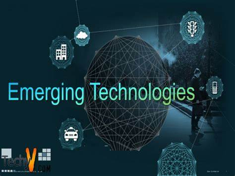
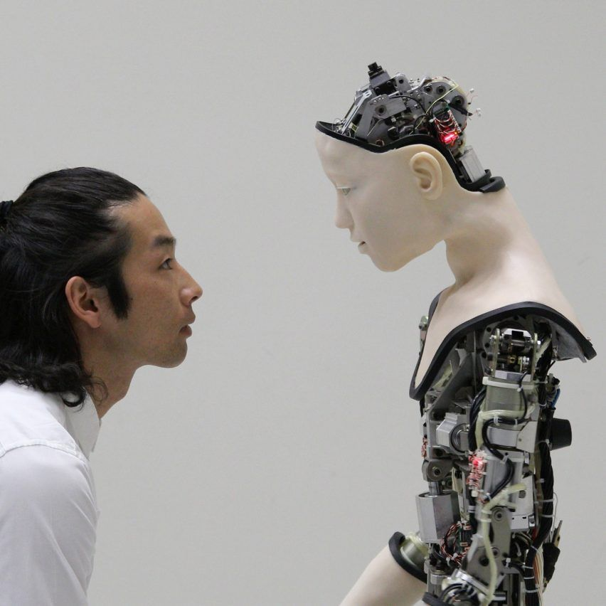
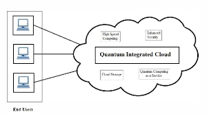
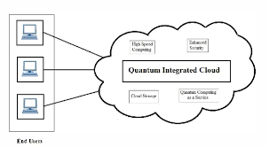

Emerging Technology
Technology whose development, practical applications, or both are still largely unrealized, but may eventually broach new territory in some significant way. A term generally used to describe a new technology, But it may also refer to the continuing development of an existing technology;it can have slightly different meaning when used in different areas,such as media,business, science, or education.The term commonly refers to technologies that are currently developing or that are expected to be available within the next 5 to 10 years,and is usually reserved for technologies that are creating, or are expected to create,significant social or economic effects.
Emerging digital technologies have generated new opportunities while creating new legal challenges,particularly related to copyrights,, trademarks, patents, royalties, and licensing.for example,the development of new digital communication technologies and media has given rise to novel issues related to the digital reproduction and distribution of copyrighted works,
Emerging technology is a term generally used to describe a new technology, but it may also refer to the continuing development of existing technology; it can have slightly different meanings when used in different areas, such as media, business, science, or education.
  

.jpg)
Artificial Intelligence
Artificial intelligence (AI) is intelligence—perceiving, synthesizing, and inferring information—demonstrated by machines, as opposed to intelligence displayed by non-human animals and humans. Example tasks in which this is done include speech recognition, computer vision, translation between (natural) languages, as well as other mappings of inputs
Artificial Intelligence is composed of two words Artificial and Intelligence. Artificial defines "man-made," and intelligence defines "thinking power", or “the ability to learn and solve problems” hence Artificial Intelligence means "a man-made thinking power." So, we can define Artificial Intelligence (AI) as the branch of computer science by which we can create intelligent machines which can behave like a human, think like humans, and able to make decisions. Intelligence, as we know, is the ability to acquire and apply knowledge. Knowledge is the information acquired through experience. Experience is the knowledge gained through exposure (training). Summing the terms up, we get artificial intelligence as the “copy of something natural (i.e., human beings)‘WHO’ is capable of acquiring and applying the information it has gained through exposure.”
Internet of Things
The Internet of things (IoT) describes physical objects (or groups of such objects) with sensors, processing ability, software and other technologies that connect and exchange data with other devices and systems over the Internet or other communications networks.Internet of things has been considered a misnomer because devices do not need to be connected to the public internet, they only need to be connected to a network, and be individually addressable.
The description of the Internet of Things is related to different definitions used by several groups for promoting the particular concept in the whole world. ➢ According to the Internet Architecture Board’s (IAB) definition, IoT is the networking of smart objects, meaning a huge number of devices intelligently communicating in the presence of internet protocol that cannot be directly operated by human beings but exist as components in buildings, vehicles or the environment.
Augmented Reality
Augmented Reality is a technology that allows digitally generated 3D Objects to be overlaid in real-world scenarios. The virtual objects shows up on the screen in the real environment together with the AR device’s camera input. This way the users can interact with both the physical world and the virtual object enriching the experience with data.AR overlays digitally created content into the user’s real-world environment. an enhanced version of the real physical world that is achieved through the use of digital visual elements, sound, or other sensory stimuli and delivered via technology.
Data Science
Is a multi-disciplinary field that uses scientific methods, processes, algorithms, and systems to extract knowledge and insights from structured, semi-structured and unstructured data.Is much more than simply analyzing data. It offers a range of roles and requires a range of skills.
Emerging technologies in Data Science
- Internet of Things (IoT)
- Machine Learning
- Artificial Intelligence(AI)
- AR/VR Systems
Nanotechnology
Nanotechnology is the application of nanoscience leading to the use of new nanomaterials and nanosize components in useful products. Nanotechnology will eventually provide us with the ability to design custom-made materials and products with new enhanced properties, new nanoelectronics components, new types of “smart” medicines and sensors, and even interfaces between electronics and biological systems… These newborn scientific disciplines are situated at the interface between physics, chemistry, materials science, microelectronics, biochemistry, and biotechnology. Control of these disciplines therefore requires an academic and multidisciplinary scientific education.
Cloud and Quantum Computing
computing is on-demand access, via the internet, to computing resources—applications, servers (physical servers and virtual servers), data storage, development tools, networking capabilities, and more—hosted at a remote data center managed by a cloud services provider (or CSP). The CSP makes these resources available for a monthly subscription fee or bills them according to usage.